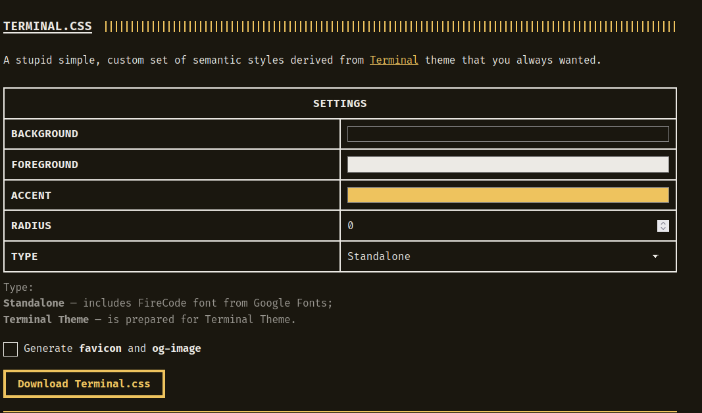

Terminal Blog Theme with Hugo on Github Pages
Getting Started#
I assume you have Hugo installed. If not check their docs to see how to install it. It’s pretty straight forward. Once you have it installed you’ll probably want to install a theme. Hugo has a lot of themes available.
But I prefer the Terminal theme. However this was challenging for me to to do based on the documentation the developer provided. So after trying a lot of stuff and getting lots of errors I finally figured out how to make it work. So I’m writing it here.
Create a website with Hugo#
In your terminal type:
hugo new site (name of your website)
This creates a directory based on your website name cd into it. You’ll see a bunch of files created for you. Don’t worry about them. We’re gonna get rid of most of them.
rm -rf data i18n themes assets archetypes static layouts
We’re gonna get this stuff from out theme.
Getting the Terminal theme#
This is the part where the theme’s documentation has a different route which I didn’t fully understand so I’m gonna explain my way of doing it.
cd in to your home. clone the theme’s project.
git clone https://github.com/panr/hugo-theme-terminal.git themes/terminal
this clones the repo in themes/terminal directory.
Modifying the theme#
cd themes/terminal
First delete the .git directory rm -rf .git
You can remove the exampleSite directory as well. rm -rf exampleSite
You also don’t need the default images. rm -rf images/*
You don’t need the markdown files as well rm *.md
Now copy everything from this directory to your website directory. cp -r * ../../yourwebsite
If you run hugo serve -D in your website directory. You must see your website localhost link probably on port 1313.
Congrats…
Let’s create the main config files so we can customize more stuff.
From now on everything happens in the website directory so I won’t mention it anymore
Create a hugo.toml file in root of your website directory and paste this config into it.
baseurl = "/"
languageCode = "en-us"
paginate = 5
[params]
# dir name of your main content (default is `content/posts`).
# the list of set content will show up on your index page (baseurl).
contentTypeName = "posts"
# if you set this to 0, only submenu trigger will be visible
showMenuItems = 2
# show selector to switch language
showLanguageSelector = false
# set theme to full screen width
fullWidthTheme = false
# center theme with default width
centerTheme = true
# if your resource directory contains an image called `cover.(jpg|png|webp)`,
# then the file will be used as a cover automatically.
# With this option you don't have to put the `cover` param in a front-matter.
autoCover = true
# set post to show the last updated
# If you use git, you can set `enableGitInfo` to `true` and then post will automatically get the last updated
showLastUpdated = false
# Provide a string as a prefix for the last update date. By default, it looks like this: 2020-xx-xx [Updated: 2020-xx-xx] :: Author
# updatedDatePrefix = "Updated"
# whether to show a page's estimated reading time
readingTime = false # default
# whether to show a table of contents
# can be overridden in a page's front-matter
# Toc = false # default
# set title for the table of contents
# can be overridden in a page's front-matter
# TocTitle = "Table of Contents" # default
[params.twitter]
# set Twitter handles for Twitter cards
# see https://developer.twitter.com/en/docs/tweets/optimize-with-cards/guides/getting-started#card-and-content-attribution
# do not include @
creator = ""
site = ""
[languages]
[languages.en]
languageName = "English"
title = "Parsa | Tech Content"
[languages.en.params]
subtitle = "Parsa | Tech Content"
owner = "Parsa"
keywords = ""
copyright = ""
menuMore = "Show more"
readMore = "Read more"
readOtherPosts = "Read other posts"
newerPosts = "Newer posts"
olderPosts = "Older posts"
missingContentMessage = "Page not found..."
missingBackButtonLabel = "Back to home page"
minuteReadingTime = "min read"
words = "words"
[languages.en.params.logo]
logoText = "Parsa | Tech Content"
logoHomeLink = "/"
[languages.en.menu]
[[languages.en.menu.main]]
identifier = "about"
name = "About"
url = "/about"
Of course you can see this config file has my information in it. So customize the options as you like. There are pretty self explanatory. After you’re sure everything is the way you like it be copy the config file like this.
mkdir -p config/_default
cp hugo.toml config/_default
If you have the server running you must see your changes otherwise start it again with hugo serve -D so you can make sure everything is fine.
Customizing the theme#
Now that we have the website running on our localhost we can start to customize it even more.
Everything that you want to customize are inside layouts/partials
For example if you don’t like the powered by stuff in the footer open footer.html and take that part out. You’ll see the changes happen.
Customizing with CSS#
The developer was a genius for this part and provided a color generation website for this theme. So let’s use it.
Head over to the website.
The website looks like this. Choose the colors you like and for the type choose Terminal theme. Click on Download terminal.css. And you’ll get a terminal.css file. copy it in your static folder.
For me it’s cp ~/Downloads/terminal.css static
Now you can see your colors applied to your website. Great.
What’s even better than this you might ask
This is a css file so it can be customized however you like it. For example here’s mine. it makes boxes around posts and applies a different font. With my tailwind like colors.
@import url('https://fonts.googleapis.com/css2?family=Quicksand:wght@300..700&family=Roboto:ital,wght@0,100;0,300;0,400;0,500;0,700;0,900;1,100;1,300;1,400;1,500;1,700;1,900&display=swap');
:root {
--background: #121c22;
--foreground: #eceae5;
--accent: #a079e0;
--font-size: 1rem;
--line-height: 1.6rem;
--radius: 5px;
}
html {
box-sizing: border-box;
}
*,
*:before,
*:after {
box-sizing: inherit;
margin: 0;
padding: 0;
}
body {
margin: 0;
padding: 0;
font-family: ui-sans-serif,system-ui,sans-serif,Apple Color Emoji,Segoe UI Emoji,Segoe UI Symbol,Noto Color Emoji;
font-size: 1rem;
font-weight: 800;
line-height: var(--line-height);
letter-spacing: 0.04em;
background: radial-gradient(circle at center, #221e23 20%, #121c22 90%);
background-repeat: no-repeat;
background-attachment: fixed;
color: var(--foreground);
text-rendering: optimizeLegibility;
-webkit-font-smoothing: antialiased;
font-feature-settings: "liga", "tnum", "zero", "ss01", "locl";
font-variant-ligatures: contextual;
-webkit-overflow-scrolling: touch;
-webkit-text-size-adjust: 100%;
}
::placeholder {
color: color-mix(in srgb var(--foreground) 50%, black);
}
h1,
h2 {
font-size: calc(var(--font-size) * 1.1);
letter-spacing: 0.06em;
}
h1 {
text-decoration: underline;
text-decoration-thickness: 2px;
text-underline-offset: calc(var(--font-size) * 0.2);
}
h3,
h4,
h5,
h6 {
font-size: calc(var(--font-size) * 1.1);
letter-spacing: 0.04em;
}
h1,
h2,
h3,
h4,
h5,
h6,
p,
ul,
ol,
img,
figure,
video,
table {
margin: calc(var(--line-height) * 1.2) 0;
}
a {
color: var(--accent);
}
button {
position: relative;
font: inherit;
font-weight: bold;
text-decoration: none;
text-align: center;
background: transparent;
color: var(--accent);
padding: 5px 18px;
border: 4px solid var(--accent);
border-radius: var(--radius);
transition: background 0.15s linear;
appearance: none;
cursor: pointer;
outline: none;
}
button:hover {
background: color-mix(in srgb, var(--accent) 15%, transparent);
}
button:focus-visible,
a:focus-visible {
outline: 1px solid var(--accent);
outline-offset: 2px;
}
fieldset {
display: inline-block;
border: 2px solid var(--foreground);
border-radius: calc(var(--radius) * 1.6);
padding: 10px;
}
fieldset *:first-child {
margin-top: 0;
}
fieldset input,
fieldset select,
fieldset textarea,
fieldset label,
fieldset button {
margin-top: calc(var(--line-height) * 0.5);
width: 100%;
}
label {
display: inline-block;
}
label input {
margin-top: 0;
}
input,
textarea,
select {
background: transparent;
color: var(--foreground);
border: 1px solid var(--foreground);
border-radius: var(--radius);
padding: 10px;
font: inherit;
appearance: none;
}
input[type="checkbox"] {
width: auto;
}
input:focus-visible,
input:active,
textarea:focus-visible,
textarea:active,
select:focus-visible,
select:active {
border-color: var(--accent);
outline: 1px solid var(--accent);
outline-offset: 2px;
}
input:active,
textarea:active,
select:active {
box-shadow: none;
}
select {
background-image: linear-gradient(
45deg,
transparent 50%,
var(--foreground) 50%
),
linear-gradient(135deg, var(--foreground) 50%, transparent 50%);
background-position: calc(100% - 20px), calc(100% - 1em);
background-size:
5px 5px,
5px 5px;
background-repeat: no-repeat;
padding-right: 40px;
}
select option {
background: var(--background);
}
input[type="checkbox"] {
vertical-align: middle;
padding: 10px;
box-shadow: inset 0 0 0 3px var(--background);
}
input[type="checkbox"]:checked {
background: var(--accent);
}
img {
display: block;
max-width: 100%;
border: 8px solid var(--accent);
border-radius: var(--radius);
padding: 8px;
overflow: hidden;
}
figure img,
figure video {
margin-bottom: 0;
}
figure figcaption {
background: var(--accent);
color: var(--background);
text-align: center;
font-size: 1rem;
font-weight: normal;
margin-top: -8px;
border-radius: 0 0 var(--radius) var(--radius);
}
ul,
ol {
margin-left: 4ch;
padding: 0;
}
ul ul,
ul ol,
ol ul,
ol ol {
margin-top: 0;
}
li::marker {
color: var(--accent);
}
ul li,
ol li {
position: relative;
}
code,
kbd {
font-family:
"Courier Prime",
Monaco,
Consolas,
Ubuntu Mono,
monospace !important;
font-feature-settings: normal;
background: color-mix(in srgb, var(--foreground) 5%, transparent);
color: var(--accent);
padding: 1px 6px;
margin: 0 2px;
font-size: 0.95rem;
}
kbd {
border-top: 1px solid color-mix(in srgb, var(--accent) 25%, transparent);
border-left: 1px solid var(--accent);
border-right: 1px solid var(--accent);
border-bottom: 4px solid var(--accent);
border-radius: 4px;
}
code code {
background: transparent;
padding: 0;
margin: 0;
}
pre {
tab-size: 4;
background: color-mix(in srgb, var(--foreground) 5%, transparent) !important;
color: var(--foreground);
padding: 20px 10px;
font-size: 0.95rem !important;
overflow: auto;
border-radius: var(--radius);
border: 1px solid color-mix(in srgb, var(--foreground) 10%, transparent);
}
pre code {
background: none !important;
margin: 0;
padding: 0;
font-size: inherit;
border: none;
}
sup {
line-height: 0;
}
abbr {
position: relative;
text-decoration-style: wavy;
text-decoration-color: var(--accent);
cursor: help;
}
sub {
bottom: -0.25em;
}
sup {
top: -0.25em;
}
mark {
background: color-mix(in srgb, var(--accent) 45%, transparent);
color: var(--foreground);
}
blockquote {
position: relative;
border-top: 1px solid var(--accent);
border-bottom: 1px solid var(--accent);
margin: 0;
padding: 25px;
}
blockquote:before {
content: ">";
display: block;
position: absolute;
left: 0;
color: var(--accent);
}
blockquote p:first-child {
margin-top: 0;
}
blockquote p:last-child {
margin-bottom: 0;
}
table {
table-layout: auto;
border-collapse: collapse;
}
table,
th,
td {
border: 2px solid var(--foreground);
padding: 10px;
}
th {
border-style: solid;
color: var(--foreground);
text-align: left;
letter-spacing: 0.04em;
}
hr {
width: 100%;
border: none;
background: var(--accent);
height: 2px;
}
.post {
border-style: solid;
border-width: 1px;
border-color: #a079e0;
padding: 1rem;
margin-top:1rem;
margin-bottom:1rem;
border-radius:20px;
background: #121c22;
color: #9fb9d0;
}
.post-tags {
font-size: 0.9rem;
font-family: "Fira Code", monospace;
color: grey;
}
.post-tags a {
color: grey;
}
.post-title {
font-weight: bold;
}
.read-more {
padding-top: 0.9rem !important;
font-size: 0.9rem !important;
}
Great. Now the customizing part is out of the way. Let’s get to deploying it.
Deploying to Github Pages#
Creating a repo with the correct settings#
First create a repo in github. Check create a readme.md and create it.
In your repo settings go to pages and on deploy with check Github Actions and save it.
Then clone it on your machine. Copy all the contents of your website directory into it.
Now we need a github actions file so we can deploy it the website and update everytime we write a new article.
In your cloned project directory
mkdir -p .github/workflows
Create a hugo.yaml file inside it and copy this code in it.
# Sample workflow for building and deploying a Hugo site to GitHub Pages
name: Deploy Hugo site to Pages
on:
# Runs on pushes targeting the default branch
push:
branches:
- main
# Allows you to run this workflow manually from the Actions tab
workflow_dispatch:
# Sets permissions of the GITHUB_TOKEN to allow deployment to GitHub Pages
permissions:
contents: read
pages: write
id-token: write
# Allow only one concurrent deployment, skipping runs queued between the run in-progress and latest queued.
# However, do NOT cancel in-progress runs as we want to allow these production deployments to complete.
concurrency:
group: "pages"
cancel-in-progress: false
# Default to bash
defaults:
run:
shell: bash
jobs:
# Build job
build:
runs-on: ubuntu-latest
env:
HUGO_VERSION: 0.128.0
steps:
- name: Install Hugo CLI
run: |
wget -O ${{ runner.temp }}/hugo.deb https://github.com/gohugoio/hugo/releases/download/v${HUGO_VERSION}/hugo_extended_${HUGO_VERSION}_linux-amd64.deb \
&& sudo dpkg -i ${{ runner.temp }}/hugo.deb
- name: Install Dart Sass
run: sudo snap install dart-sass
- name: Checkout
uses: actions/checkout@v4
- name: Setup Pages
id: pages
uses: actions/configure-pages@v5
- name: Install Node.js dependencies
run: "[[ -f package-lock.json || -f npm-shrinkwrap.json ]] && npm ci || true"
- name: Build with Hugo
env:
HUGO_CACHEDIR: ${{ runner.temp }}/hugo_cache
HUGO_ENVIRONMENT: production
TZ: America/Los_Angeles
run: |
hugo \
--gc \
--minify \
--baseURL "${{ steps.pages.outputs.base_url }}/"
- name: Upload artifact
uses: actions/upload-pages-artifact@v3
with:
path: ./public
# Deployment job
deploy:
environment:
name: github-pages
url: ${{ steps.deployment.outputs.page_url }}
runs-on: ubuntu-latest
needs: build
steps:
- name: Deploy to GitHub Pages
id: deployment
uses: actions/deploy-pages@v4
Ok then.
hugo
git add .
git commit -m "Hello World"
git push
Wait a minute then head over to the pages again. You’ll see the link to your website.
Now how to add posts?
In your repo directory run hugo new posts/post-link/index.md
The file content/posts/post-link/index.md will be your first post. Write anything in markdown format inside it. Save the file. Commit and push to the repo and your website will get updated.
We are done.
Tips#
- If github action doesn’t build the website automatically check if your branch is named main or master and update the file accordingly.
- For the about page in the menu create an about.md in contents directory.
Kudos to#
Hugo Panr Github